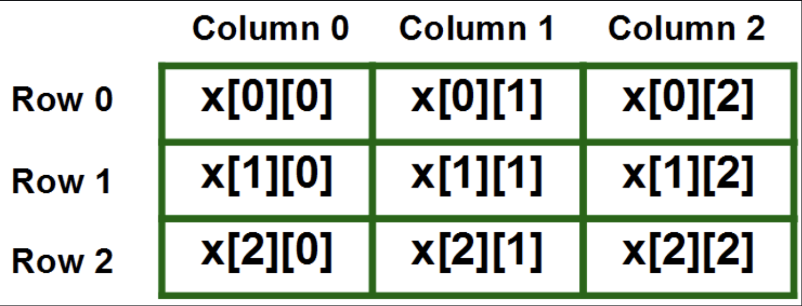

As programmers, we use data structures to store information. A primitive variable is an example of a simple data structure, as it can store a single value to be retrieved later. A variable that can store a list of other variables is called a complex data structure. Arrays are example of complex data structures. An array is a collection of consecutive memory locations, which all hold values of the same data type. The whole array is given a name and is treated as one, and each specific location, called an element, is accessed using its index. Array indexes start at 0, which means the first element in the array has the index 0, and so on. The index of an array is used to access or change the element at that location in memory. The declaration of arrays are different from other data types, as they require the new keyword, and the size of the array to be created, and then populating each element. Arrays can also be created using the {} brackets, as shown below:
String[] arr = {"I", "Love", "CS!"};
String[] arr2 = new String[3];
arr2[0] = "I";
arr2[1] = "Love";
arr2[2] = "CS!";
Both of the following declarations will create identical arrays. One common mistake made with arrays is regarding their length. The length of an array is declared during its initialization, and cannot be changed. It can be accessed using arrName.length, similar to how the length of a string is accessed. The arrays class comes with many built-in methods, which can be found at this link. Arrays can both be passed and returned by methods. One thing to keep in mind when passing arrays to a method is that they are passed as a reference. When other data types, such as integers, are passed to a method, a copy of them is created. That means if the value of the parameter is changed in the method, the original variable will remain unchanged. On the other hand, with non-primitive data types such as arrays, no copy is created when being passed to a method. This means if the values of the array are changed in the method, then the original variable is changed too. Refer to the code below and copy to see the results!
One important concept to understand when working with arrays is the concept of array bounds checking. This refers to the process of checking whether an index is within the bounds of the array before attempting to access or modify the element at that index. If the index is out of bounds, an ArrayIndexOutOfBoundsException is thrown. Finally, it's important to understand the trade-offs between using arrays and other data structures, such as lists or sets. While arrays are efficient for random access, they are less flexible than other data structures when it comes to adding or removing elements. It's important to choose the appropriate data structure for the task at hand.
import java.util.Arrays;
public class ArrayTesting {
public static void main(String[] args) {
String[] arr = {"I", "Love", "CS!"};
System.out.println("Array before change: " + Arrays.toString(arr));
change(arr);
System.out.println("Array after change: " + Arrays.toString(arr));
}
public static void change(String[] array){
array[0] = "We";
}
}
Another use of arrays comes in the form of 2-dimensional arrays, which are arrays of arrays. When declaring 2D arrays, two pairs of square brackets are required rather than one, as well as 2 different sizes, one for the larger array of arrays, and one for the smaller sub-arrays. Elements of a 2D array is accessed using two numbers, one for the row index and one for the column. For example, myArray[0][1] would access the second element in the first row of a two-dimensional array. A common mistake that occurs with 2-dimensional arrays comes with ragged arrays. Ragged arrays refer to arrays in which different sub-arrays have different lengths. As a result, many beginner programmers run into errors when traversing 2D arrays. Both 1D and 2D arrays can be traversed using a for each loop, which is a more convenient way of going through arrays. The disadvantage of a for each loop is that the index position is not kept in track, which makes it difficult to use when the position of a certain element is important to the program. Refer to the image below to understand how 2D arrays work.
Practice Questions
Consider two parallel arrays which contain the names and corresponding scores of players in a trivia game.
String[] names = {"Rob", "Pam", "Sandy", "Kelly", "Kim", "J.P."};
int[] scores = {2600, 2420, 1790, 2100, 3100, 3250};
Which of the following code segments correctly prints the names and scores of all the players who scored above high?
(A) for(int element : scores)
if(element > hight)
System.out.println(names + " " + element);
(B) for(int element : scores)
if(element > = high)
System.out.println(names + " " + element);
(C) for(int i = 0; i < scores.length; i++)
if(scores[i] > high)
System.out.println(names[i] + " " + scores[i]);
(D) for(int i = 0; i < scores.length; i++)
if(scores[i] >= high)
System.out.println(names[i] + " " + scores[i]);
(E) for(int i = 0; i < = scores.length; i++)
if(scores[i] > high)
System.out.println(names[i] + " " + scores[i]);
Answer: C. Since we need to access the index of an element, a standard for loop must be used, not a for-each loop. Only elements that are above high should be printed, so the inequality > must be used.
Consider the following code segment.
int m = // some positive integer int n = // some positive integer int[][] table = new int[m][n]; for(int row = 0; row < table.length; row++) for(int col = 0; col < table[0].length; col++) if(table[row][col] < 0) table[row][col] = -table[row][col];
Which of the following best describes the result of executing the code segment?
(A) Each element in the two-dimensional array table contains the value 0.
(B) Each element in the two-dimensional array table contains a nonnegative value.
(C) Each element in the two-dimensional array table contains a nonpositive value.
(D) Each element in the two-dimensional array table contains the opposite value from when it was initilized.
(E) Each element in the two-dimensional array table contains the value row - col.
Answer: B. This uses a nested for loop with both loop control variables starting at 0 and ending at the length of the row or column, which means each element of the 2D array is potentially accessed. It tests each element against 0. If the element is negative, it will be changed to the opposite, which is positive. After the loops are complete, each element in the table will be nonnegative.
Consider the following incomplete method.
public static double findRowSum(double[][] mat, int n){
double sum = 0;
// missing code
return sum;
}
Method
(A) for(int i = 0; i < table.length; i++) sum += mat[i][n]; (B) for(int i = 0; i < table[0].length; i++) sum += mat[i][n]; (C) for(int i = 0; i < table.length; i++) sum += mat[n][i]; (D) for(int i = 0; i < table[0].length; i++) sum += mat[n][i]; (E) for(int i = 0; i < table[0].length; i++) sum += mat[n][n];
Answer: D. Only one row needs to be summed, so a single for loop is appropriate. Since row n is the row to be summed, this value needs to remain unchanged throughout the loop. Choice D correctly accesses each element in the correct row in mat.